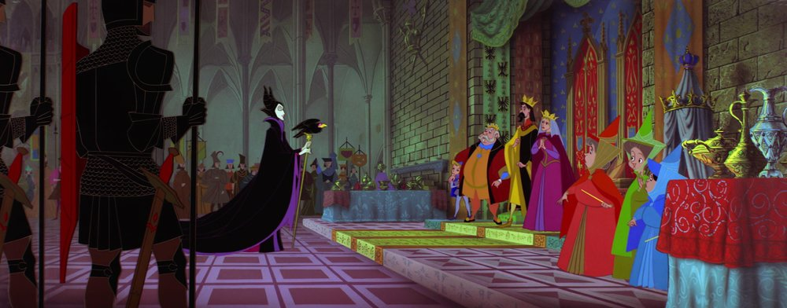
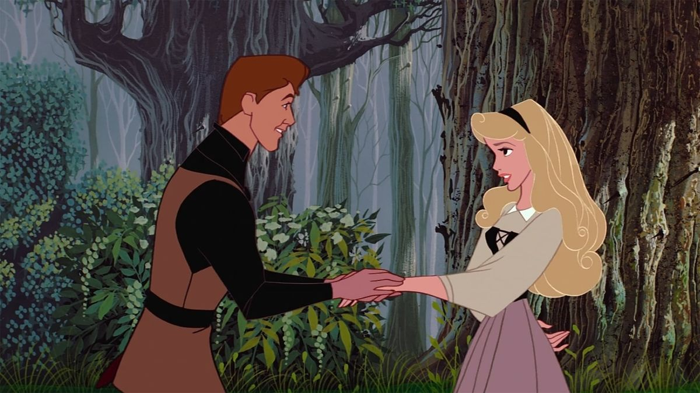
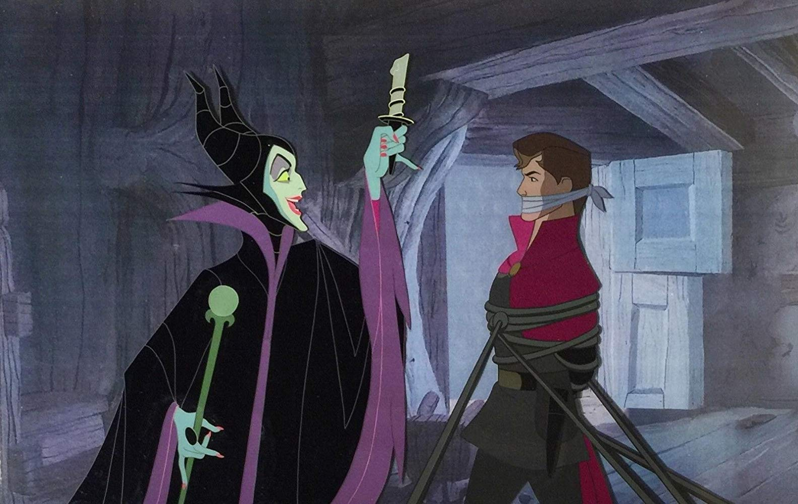
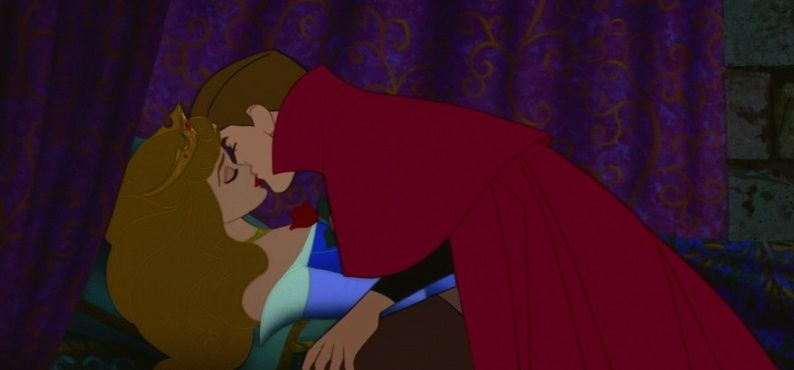

|
After many childless years, King Stefan and Queen Leah welcome the birth of their daughter, the Princess Aurora. Flora and Fauna bless Aurora with beauty and song, respectively, but Merryweather's gift is interrupted by the arrival of the evil fairy Maleficent. |
 |
|  |
Aurora, renamed Briar Rose, grows into a beautiful young woman. On her 16th birthday, the fairies ask her to gather berries so they can prepare a surprise party. Aurora befriends the animals of the forest and sings them a song. Prince Phillip follows Aurora's voice and is instantly struck by her beauty and grace. |
|
Maleficent appears and lures Aurora into a dark tower away from the fairies, and tricks her into touching the spindle of a cursed spinning wheel. Aurora pricks her finger, fulfilling the curse. The fairies rush to find Phillip, but he is abducted by Maleficent at the cottage. |
 |
|  |
Phillip awakens Aurora with a kiss, breaking the spell and waking the kingdom. The royal couple descends to the ballroom, where Aurora is reunited with her parents. Flora and Merryweather resume their argument over Aurora's gown while the happy couple dance, living happily ever after. |
Music
In April 1952, Billboard reported that Jack Lawrence and Sammy Fain had signed to compose the score. In the following year, Disney decided the score should be based on Peter Tchaikovsky's Sleeping Beauty Ballet, which rendered the songs Lawrence and Fain had written unusable except for "Once Upon a Dream". Walter Schumann was originally slated to be the film composer, but he left the project because of creative differences with Disney. George Bruns was recommended to replace Schumann by animator Ward Kimball. Because of a musicians' strike, the musical score was recorded in Berlin, Germany with the Berlin Symphony Orchestra from September 8 through November 25, 1958.
Chosen tracks from the soundtrack:
- "Main Title/Once Upon a Dream/Prologue"
- "Hail to the Princess Aurora"
- "Do You Hear That?/I Wonder"
- "An Unusual Prince/Once Upon a Dream (Reprise)"
- "Aurora's Return/Maleficent's Evil Spell"
- "Awakening"
- "Finale (Once Upon a Dream)"